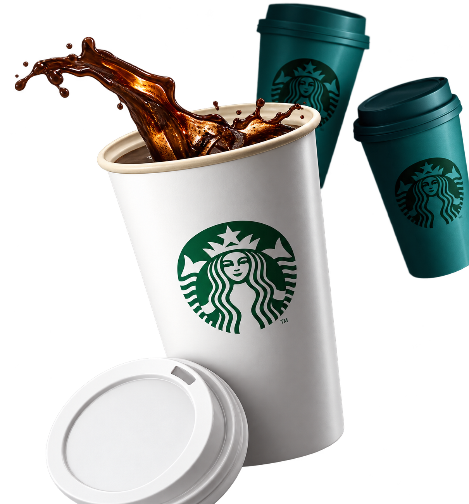

Espresso
Intenso, curto e cheio de personalidade. Para quem gosta do café no seu ritmo mais puro.
Saiba mais sobre este estiloNós já conhecemos seu amor pelo café.
Agora deixe-nos mostrar o nosso por você.

O primeiro aroma. O calor nas mãos. Aquela pausa no meio do dia. Cada pessoa tem o seu jeito de viver o café — e de transformar uma pequena pausa em um bom momento.
Encontre o seu favoritoUm espaço para apresentar o seu programa de relacionamento. Este cartão é uma ilustração de layout; não é possível cadastrar, carregar saldo ou acumular benefícios nesta demonstração.
Vamos conversarEste projeto visual explora o carinho pelos pequenos rituais: escolher o café, encontrar alguém e ter um instante só seu. Uma homenagem ao que acontece entre o primeiro e o último gole.